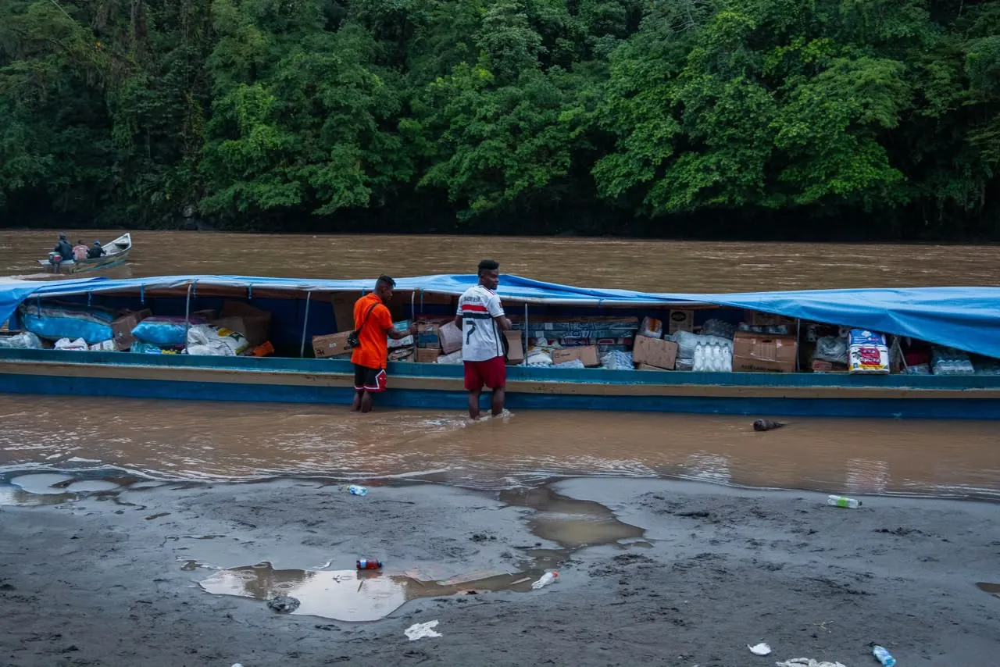
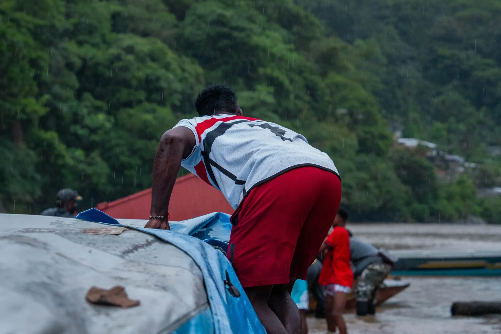
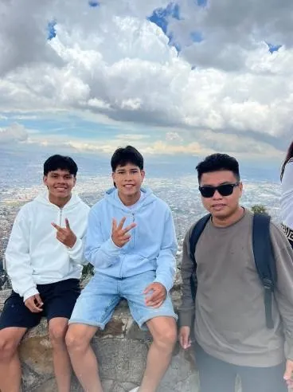
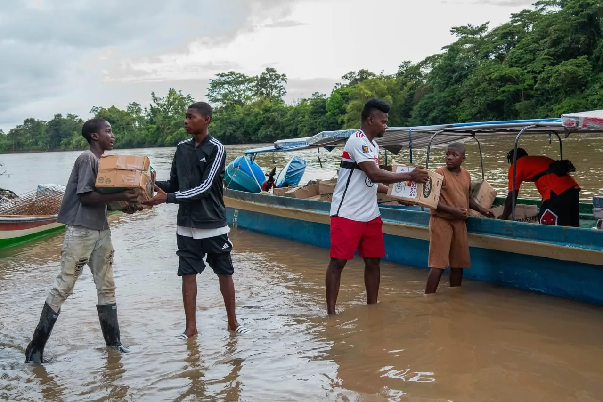
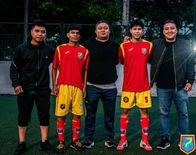
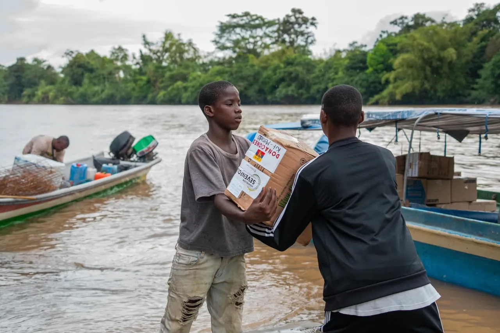
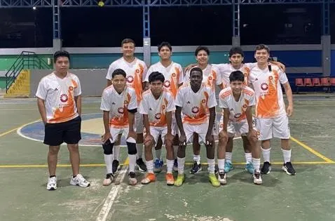
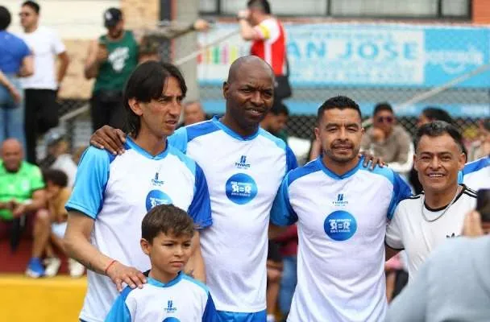

Línea 03 · Ambiente y desarrollo sostenible
Cuidar el territorio también es generar oportunidades
Promovemos iniciativas que aportan a la conservación de la biodiversidad y al desarrollo sostenible, reconociendo el territorio como parte del bienestar de sus comunidades.
2026línea en estructuración




Por qué ambiente
01
02
03
Entrenan entre selva y ríos
Nuestros jóvenes del Pacífico y la Amazonía crecen en territorios únicos en el mundo. Queremos que también sean quienes los cuiden.
Biodiversidad
Desarrollo sostenible
Territorios con más posibilidades de crecer también necesitan ser sostenibles.
Proyección
Una línea que está naciendo
Estamos estructurando los primeros programas y buscamos aliados que quieran construirlos con nosotros.

Pacífico
Chocó
Donde llegamos con ayuda humanitaria en 2026 y donde empieza un nuevo proceso.

Amazonía
Vaupés
Comunidades indígenas con las que ya trabajamos en deporte y educación.

Hacia 2027
Aliados ambientales
Empresas y organizaciones que quieran sumar su experiencia y sus recursos.